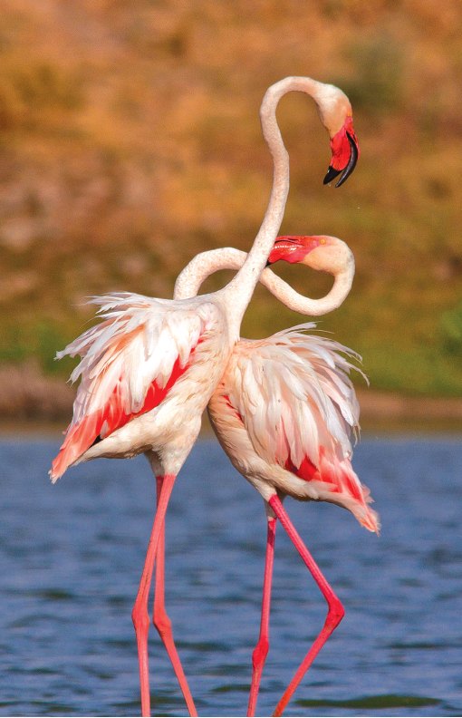
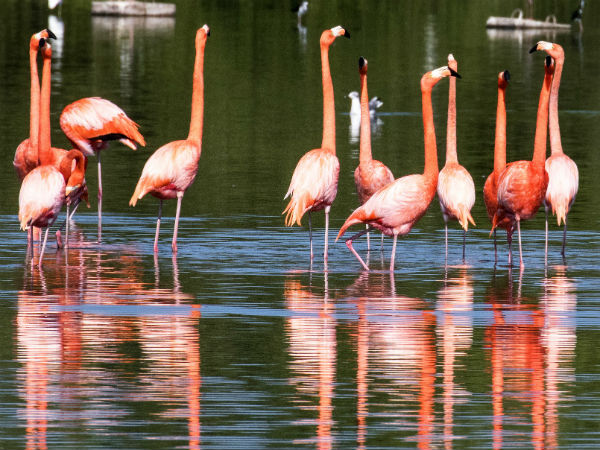
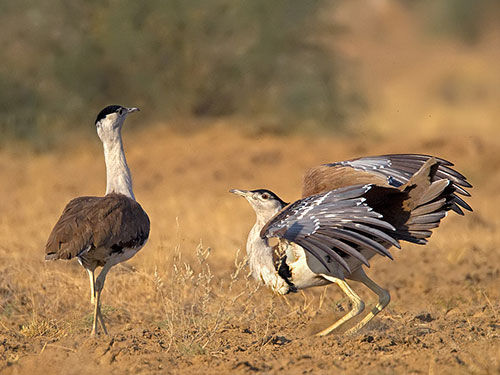

Popularly known locally as the Lala Prajan Sanctuary, Kutch Bustard Sanctuary primary aim is to conserve the Great Indian Bustard. It is located in Jakhau village in Naliya Taluka, Gujarat. Among many other different varieties of wildlife that can be found within the reserve, there are three different kinds of Bustards themselves in the sanctuary.
The sanctuary covers an area of just over 2 sq. km, but still houses some of the excellent species including harriers, common cranes, black partridges, sand grouses, Black and Grey Francolin, Spotted and Indian Sandgrouse, quails, larks, shrikes, coursers, plover, Imperial Eagle, flamingos, herons, egrets, sandpipers, etc. Some other wild animals which are present here are wolf, caracal, desert cat, jackal, striped hyena, fox, mongoose, blue bull, chinkara, spiny-tailed lizard and various types of snakes.